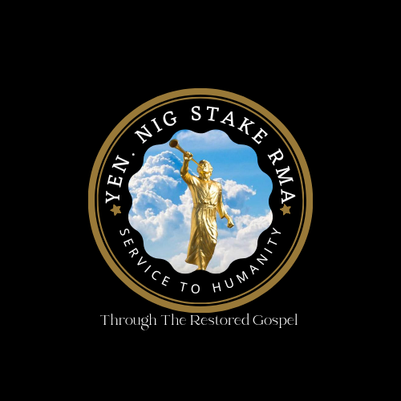
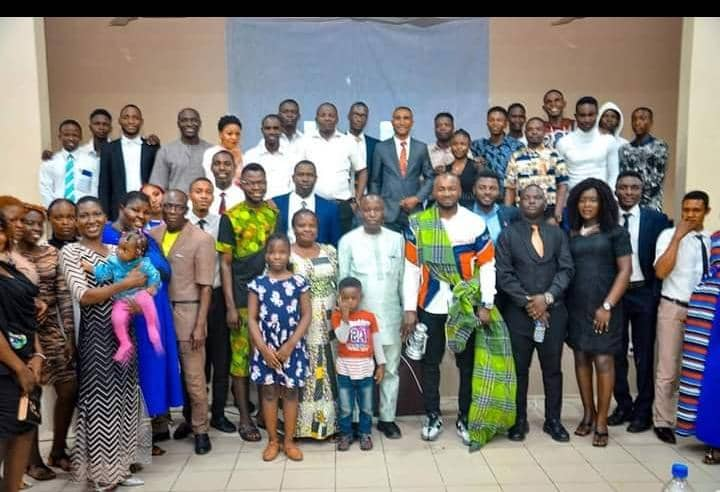
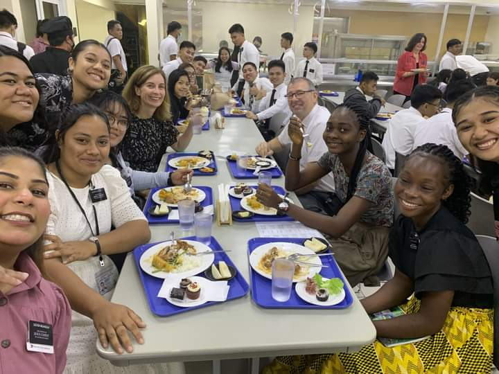
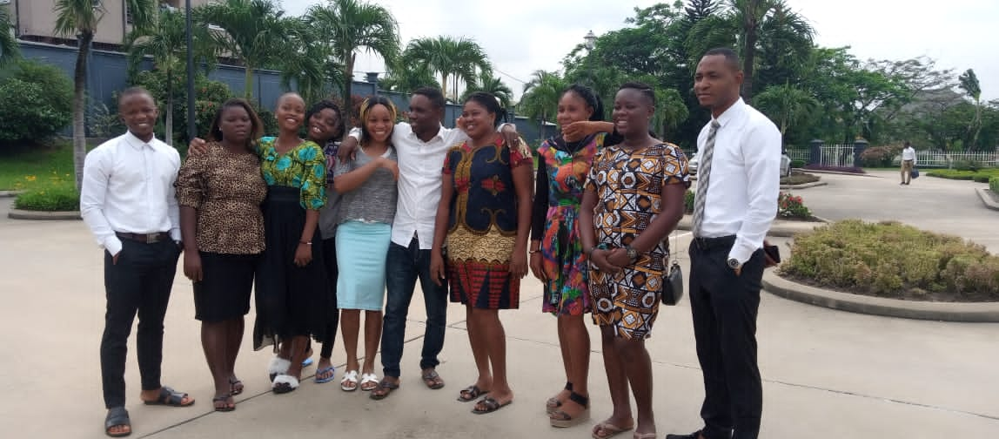
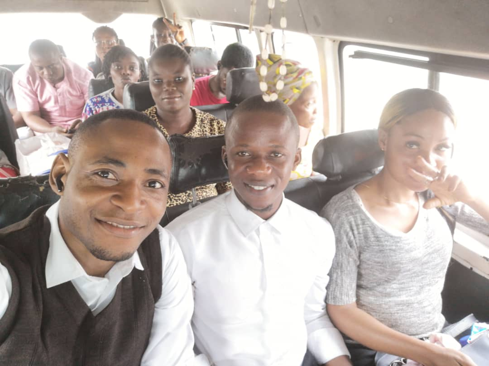
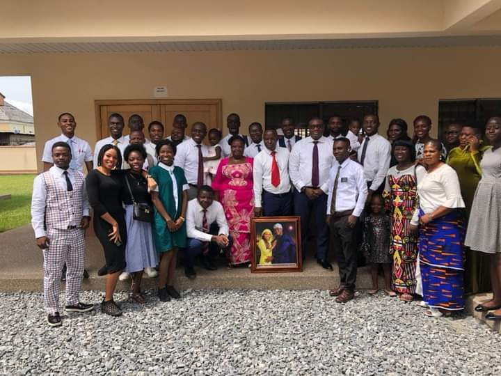

Our Mission
Our mission is to unite and empower returned full-time missionaries who have served in various corners of the world and bring them together to make a positive impact on our local community and the missionary work within our stake. We are a group of passionate individuals who are committed to strengthening one another, helping young men and women prepare for their missions, and improving the state of missionary work in the Yenagoa Nigeria Stake. Additionally, we are dedicated to giving back through charitable donations and community service projects. Join us as we continue to share the light of the gospel and serve others. Our Mission The Yenagoa, Nigeria Stake Returned Missionaries Association is driven by the principle of service.

Our Vision
We aim to:
1. Strengthen the bonds among returned missionaries.
2. Assist and mentor young men and women in their journey to serve missions.
3. Enhance the state of missionary work within our stake.
4. Engage in charitable donations and community service to uplift our local community.
Strengthening One Another As returned missionaries, we understand the unique challenges and blessings that come with serving a mission. Through regular gatherings, events, and social activities, we provide a support network that helps returning missionaries transition smoothly back into daily life. We share experiences, provide emotional support, and offer guidance as our members navigate the challenges of post-mission life. Together, we foster an environment of understanding and encouragement, building lasting friendships and strengthening the spiritual and emotional well-being of each member. Preparing Future Missionaries Our association is committed to assisting young men and women in the Yenagoa Nigeria Stake who are preparing to serve missions. We offer mentorship, guidance, and workshops to help them navigate the application process, develop vital missionary skills, and deepen their understanding of the gospel. By sharing our own experiences, we strive to inspire and prepare the next generation of missionaries, ensuring they embark on their service with confidence and a strong foundation in the teachings of Jesus Christ. Improving Missionary Work To enhance the state of missionary work within the Yenagoa Nigeria Stake, our association collaborates with local leaders and missionaries to identify and address specific needs.


